Gênese e Classificação do Solo:
Perfil e morfologia do solo
Instituto Federal do Paraná
Curso Superior em Engenharia Agronômica
19 de outubro de 2026
O que é um solo?
O que é um solo?
Corpo natural constituído de materiais minerais e orgânicos, organizados em camadas e/ou horizontes, resultantes da ação de fatores de formação, com destaque para a ação biológica e climática sobre um determinado material de origem (rocha, sedimentos etc.) e numa determinada condição de relevo, através do tempo. O solo contém matéria viva e pode ser vegetado em condições naturais e, eventualmente, ter sido modificado por forte ação antrópica.
Perfil do solo
Perfil do solo
O que é um perfil?
No sentido físico e artístico…
No sentido de redes…
No sentido de trabalho…
Perfil do solo
A face do solo que vai da superfície ao material de origem (rocha ou sedimentos), usada para fins de exame, descrição e coleta do solo, é chamada de perfil.
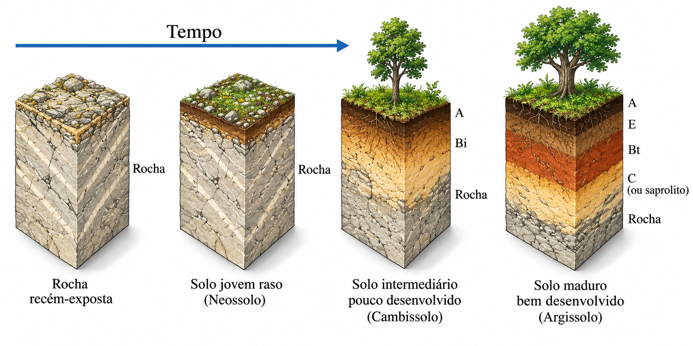
Perfil do solo
É a seção vertical do solo através de todos os seus horizontes e camadas, estendendo-se para dentro do material de origem.
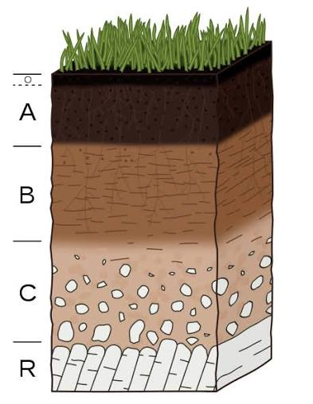
Perfil do solo
Horizontes pedogênicos: seções do perfil do solo dotadas de propriedades geradas por processos pedogenéticos.
Camadas: seções do perfil do solo que possuem propriedades não resultantes ou pouco influenciadas pelos processos pedogenéticos.
Os horizontes principais podem ser divididos em subhorizontes:
- Ex: A1, A2, A3 etc. são subhorizontes do horizonte principal A.
Horizontes do solo
Os horizontes mais próximos da superfície são resultantes da ação dos processos pedogenéticos.
A nomenclatura dos horizontes é dada pelas letras H, O, A, E, B e C, em ordem da superfície em direção ao material de origem.
Horizontes do solo
O
Horizonte ou camada superficial de cobertura, de constituição orgânica, sobreposto a alguns solos minerais, podendo estar ocasionalmente saturado com água.
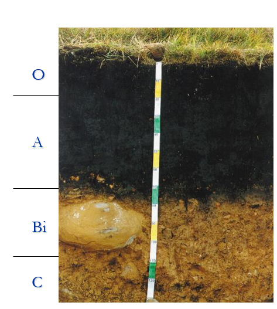
Horizontes do solo
H
Horizonte ou camada superficial de cobertura, de constituição orgânica, superficial ou não, composto de resíduos acumulados ou em acumulação sob condições de prolongada estagnação de água, salvo se artificialmente drenado.
Composto por matéria orgânica em vários estádios de decomposição.
Relacionado a solos orgânicos com condições de hidromorfismo.
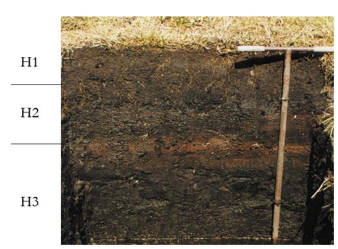
Horizontes do solo
A
Horizonte ou camada em sequência a um horizonte ou camada O ou H, de concentração de matéria orgânica decomposta ou de composição mineral.
As características do horizonte A são tipicamente influenciadas pela matéria orgânica.
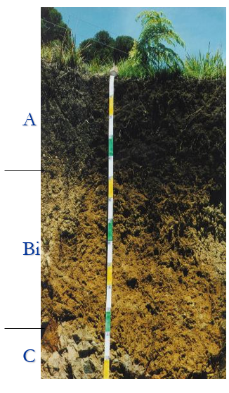
Horizontes do solo
E
Horizonte mineral, cuja característica principal é a perda de argila, ferro, alumínio ou matéria orgânica, com consequente concentração residual de areia e silte constituídos de quartzo ou outros minerais resistentes.
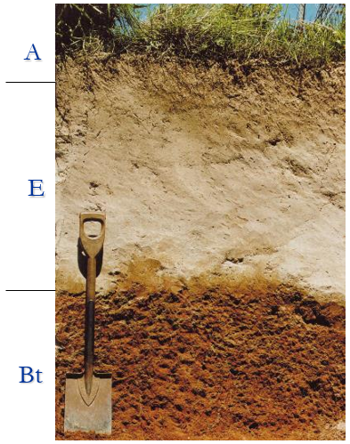
Horizontes do solo
B
Horizonte mineral formado sob um E, A ou O, bastante afetado por transformações pedogenéticas, em que pouco ou nada resta da estrutura original da rocha. Pode ser encontrado na superfície quando da ausência ou remoção de um E, A ou O por erosão.
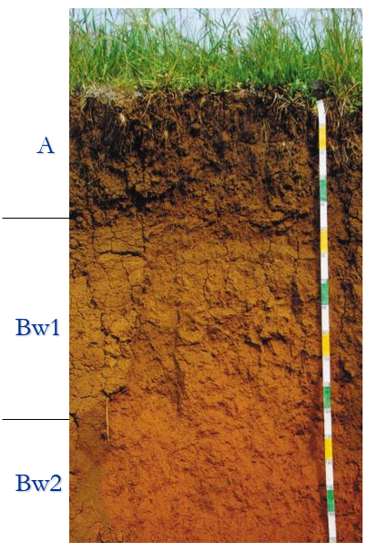
Horizontes do solo
C
Horizonte ou camada mineral de material inconsolidado sob o sólum, relativamente pouco afetado por processos pedogenéticos, similar ao material do qual o sólum pode ou não ter se formado.
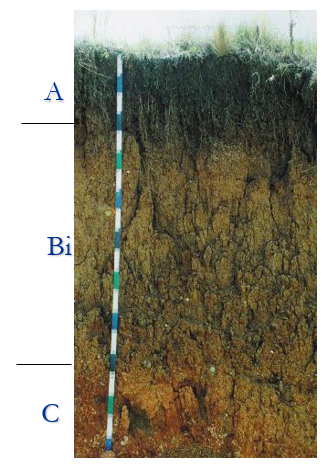
Horizontes do solo
R
Camada mineral de material consolidado (coeso) que, quando úmido, não pode ser cortado com uma pá, constituindo substrato rochoso contínuo ou praticamente contínuo.
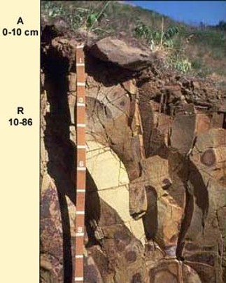
Descrição geral do perfil de solo
Descrição geral do perfil de solo
O que deve conter uma descrição:
- Data;
- Classificação do solo (veremos adiante);
- Localização: município, estado e coordenadas;
- Situação: declividade e cobertura vegetal;
- Unidade litoestratigráfica;
- Cronologia;
- Material originário;
- Pedregosidade;
- Rochosidade;
- Relevo local;
Descrição geral do perfil de solo
O que deve conter uma descrição:
- Relevo regional;
- Erosão;
- Drenagem;
- Vegetação primária;
- Uso atual;
- Clima;
- Descrito e coletado por.
Descrição geral do perfil de solo - Exemplo
Perfil: SC-PR (Exemplo para aula)
Data: 19/10/2026.
Classificação do solo: Latossolo Vermelho distroférrico típico, textura muito argilosa, A moderado, fase floresta tropical subperenifólia, relevo suave ondulado.
Localização: Município de Londrina, estado do Paraná, Brasil. Coordenadas geográficas fictícias: 23°20’00” S e 51°10’00” O.
Situação: Perfil localizado no terço médio de uma vertente, com declividade de aproximadamente 5%, sob cultivo de soja em sistema de plantio direto.
Unidade litoestratigráfica: Formação Serra Geral.
Cronologia: Mesozoico, período Cretáceo.
Material originário: Produtos da alteração de rochas basálticas.
Pedregosidade: Ausente na superfície.
Descrição geral do perfil de solo - Exemplo
Rochosidade: Ausente na superfície.
Relevo local: Suave ondulado.
Relevo regional: Predominantemente suave ondulado a ondulado.
Erosão: Laminar ligeira, sem ocorrência de sulcos expressivos.
Drenagem: Bem drenado.
Vegetação primária: Floresta Estacional Semidecidual, pertencente ao bioma Mata Atlântica.
Uso atual: Agricultura mecanizada, com cultivo de soja no verão e milho na segunda safra, em sistema de plantio direto.
Clima: Cfa — clima subtropical úmido, segundo a classificação de Köppen, com verões quentes e ausência de estação seca bem definida.
Descrito e coletado por: Gustavo Frosi.
Descrição morfológica de um perfil de solo
Descrição morfológica de um perfil de solo
O solo apresenta características externas e internas (morfológicas) próprias, que devem ser descritas com critério, uma vez que, a partir delas, se tem uma visão integrada do solo e de suas relações com a paisagem.
Permitem inferências importantes sobre a formação e o comportamento do solo.
- Capacidade de produzir de forma sustentada, adequação às práticas agrícolas, propensão à erosão, salinização, riscos de degradação etc.
Descrição morfológica de um perfil de solo
O estudo da morfologia do solo refere-se à descrição de características detectadas pelos sentidos da visão e do tato.
- Cor;
- Textura;
- Estrutura;
- Porosidade;
- Consistência;
- Transição entre horizontes.
Descrição morfológica de um perfil de solo
As características morfológicas são descritas em cada horizonte ou camada, pois podem variar ao longo do perfil.
São padronizadas e possuem metodologia própria.
Descrição morfológica de um perfil de solo
Espessura do horizonte ou camada:
distância vertical entre o início e o final do horizonte.
Ex: Um solo possui um horizonte O com 5 cm de espessura, um horizonte A com 50 cm de espessura e um horizonte B com 200 cm de espessura.
Profundidade do horizonte ou camada:
distância vertical entre o início e o final de um horizonte e a superfície do horizonte A (superfície do solo).
Ex: Um solo possui um horizonte O com profundidade de 0 a 5 cm, um horizonte A com profundidade de 0 a 50 cm e um horizonte B com profundidade de 50 a 125 cm.
Descrição morfológica de um perfil de solo
Transição do horizonte ou camada:
se refere à nitidez ou ao contraste de separação entre os horizontes ou camadas (facilidade de distinguir entre as camadas ou horizontes).
Pode ser por distinção:
- Abrupta: < 2,5 cm;
- Clara: 2,5 a 7,5 cm;
- Gradual: 7,5 a 12 cm;
- Difusa: > 12 cm.
Pode ser por topografia:
- Horizontal;
- Ondulada;
- Irregular;
- Descontínua.
Descrição morfológica de um perfil de solo
Transição do horizonte ou camada:


Descrição morfológica de um perfil de solo
Transição do horizonte ou camada:
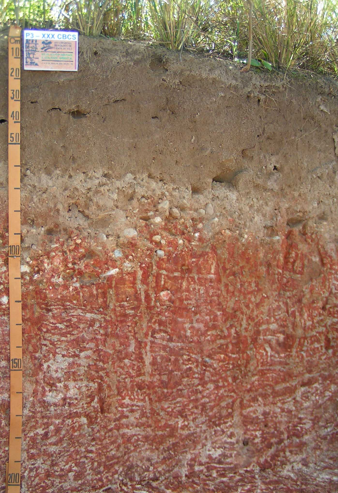
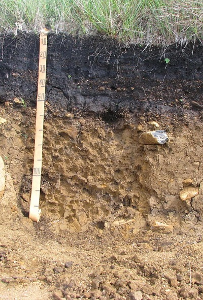
Descrição morfológica de um perfil de solo
Transição do horizonte ou camada:
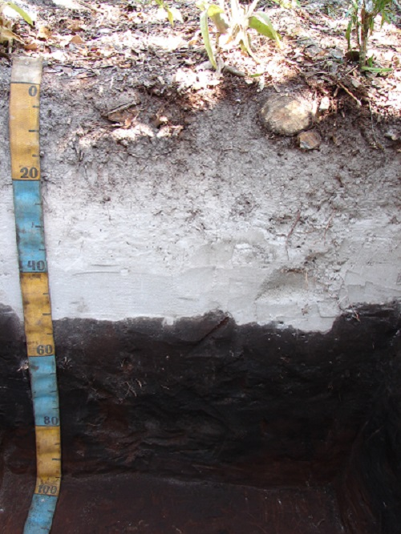
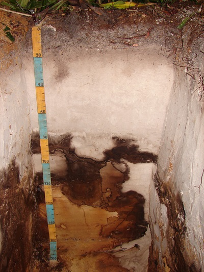
Descrição morfológica de um perfil de solo
Horizontes transicionais miscigenados:
são horizontes nos quais as propriedades de dois horizontes principais se associam conjuntamente em fusão, evidenciando a coexistência de propriedades comuns a ambos, de tal modo que não há individualização de partes distintas de um e de outro.
Ex: AB, BE, EB, BC
Horizontes transicionais mesclados:
com visualização de partes distintas de um e de outro.
Ex: A/B, B/C, E/B
Descrição morfológica de um perfil de solo
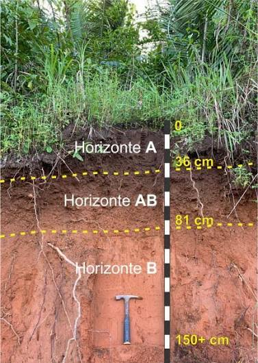
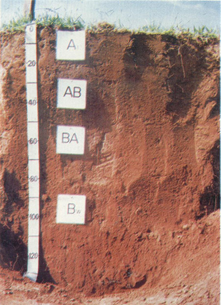
Descrição morfológica de um perfil de solo
Horizontes podem conter características específicas. A designação destas se dá por meio de sufixos (letras minúsculas).
- a: propriedades ândicas
- b: horizonte enterrado
- c: concreções ou nódulos endurecidos
- d: acentuada decomposição de material orgânico
- e: escurecimento da parte externa dos agregados por matéria orgânica não associada a sesquióxidos
- f: material plíntico e/ou bauxítico brando (laterita)
- g: glei
- h: acumulação iluvial de matéria orgânica
- i: incipiente desenvolvimento de horizonte B
- j: tiomorfismo
- k: presença de carbonatos
- m: extremamente cimentado
Descrição morfológica de um perfil de solo
- n: acumulação de sódio trocável
- o: material orgânico mal ou não decomposto
- p: aração ou outras pedoturbações
- q: acumulação de sílica
- r: rocha branda ou saprólito
- s: acumulação iluvial de sesquióxidos com matéria orgânica
- t: acumulação de argila
- u: modificações ou acumulações antropogênicas
- v: características vérticas
- w: intensa alteração com inexpressiva acumulação de argila, com ou sem concentração de sesquióxidos
- x: cimentação aparente, reversível
- y: acumulação de sulfato de cálcio
- z: acumulação de sais mais solúveis em água fria que sulfato de cálcio
Descrição morfológica de um perfil de solo
Cor:
A cor é determinada com o auxílio da Carta de Munsell (Munsell Soil Color Charts), na qual serão identificados matiz, valor e croma.
Importância:
- Drenagem;
- Composição mineralógica;
- Concentrações de elementos;
- Processos pedogenéticos.
Descrição morfológica de um perfil de solo
Cor:
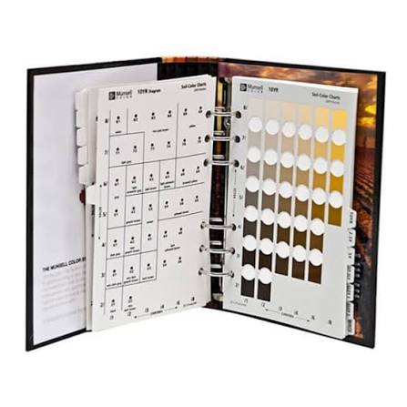
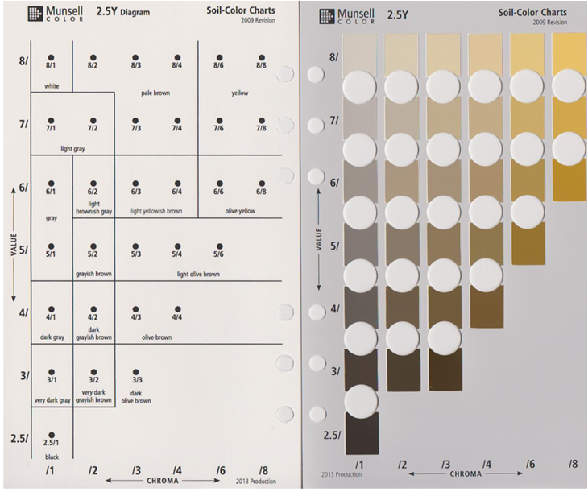
Descrição morfológica de um perfil de solo
Sistema de cor de Munsell:
Três são as variáveis utilizadas para representar cores no sistema Munsell.
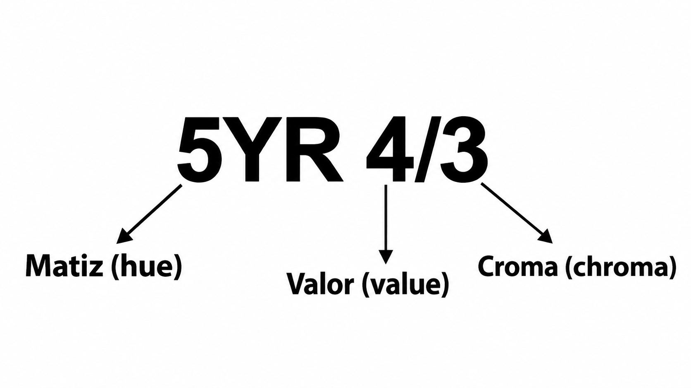
Descrição morfológica de um perfil de solo
Sistema de cor de Munsell:
O primeiro conjunto de números e letras representa o matiz (hue).
O matiz representa a posição da cor no círculo de cores (Y = amarelo; R = vermelho; G = verde; B = azul; YR = amarelo-vermelho; RY = vermelho-amarelo).
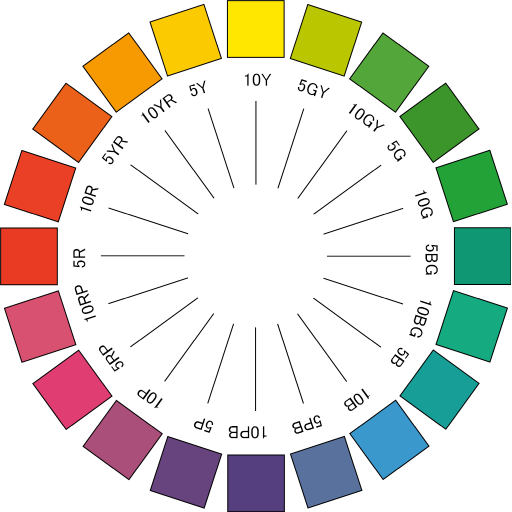
Descrição morfológica de um perfil de solo
Sistema de cor de Munsell:
O primeiro número após a barra é o valor (value).
O valor está relacionado a quão clara ou escura é uma cor. É um componente da cor que representa os tons de preto e de branco, ligado ao brilho da cor. No sistema de Munsell são utilizados números de 0 a 10.
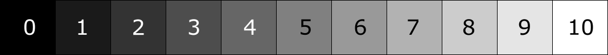
Descrição morfológica de um perfil de solo
Sistema de cor de Munsell:
O segundo número após a barra é o croma (chroma).
Este está relacionado à intensidade da cor (quão viva ela é).
Ex: verde claro e verde escuro.
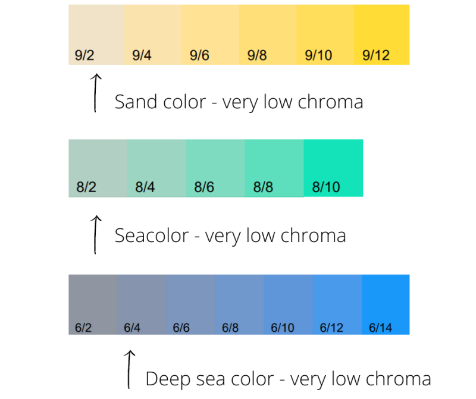
Descrição morfológica de um perfil de solo
Sistema de cor de Munsell:
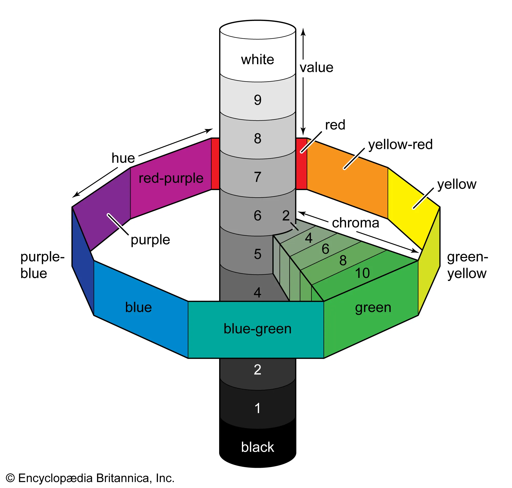
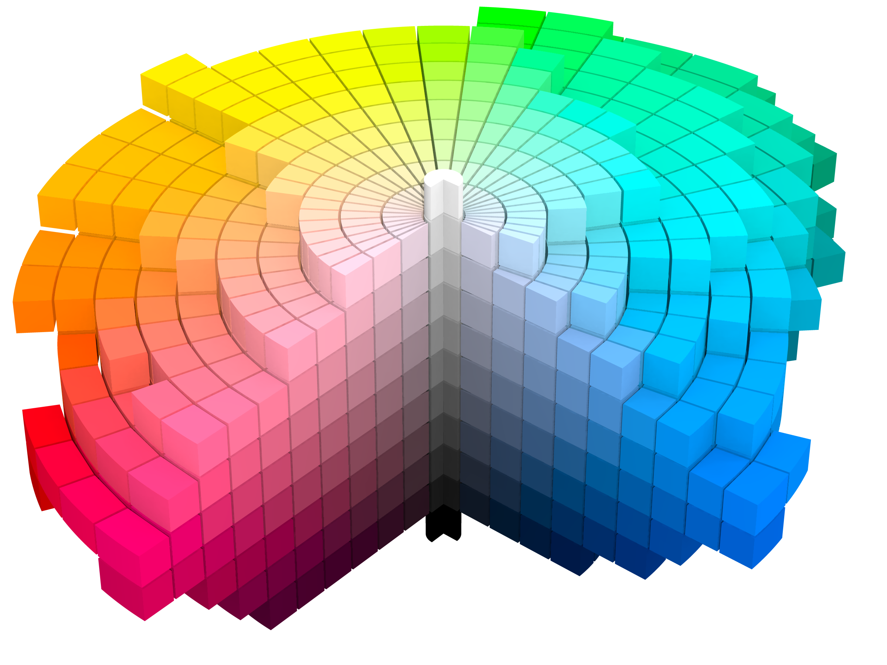
Descrição morfológica de um perfil de solo
Sistema de cor de Munsell:
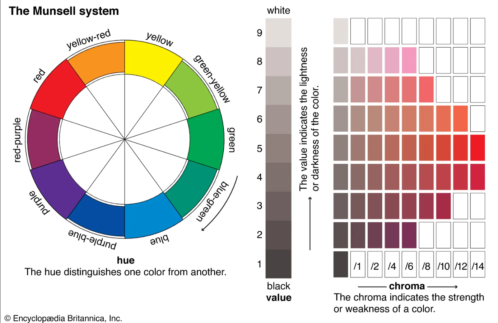
Descrição morfológica de um perfil de solo
Cor:
A cor pode ser descrita com a amostra de solo úmida (mais usual), seca, seca triturada ou úmida amassada. Caso o horizonte apresente mosqueados (manchas de outra cor), deverão ser anotados a cor, a quantidade e o contraste desse mosqueado.
Descrição morfológica de um perfil de solo
Textura:
Corresponde à proporção relativa das frações granulométricas do solo.
Pelo tato, com a amostra de solo molhada.
Procedimento: pegue uma amostra de solo do tamanho de um ovo pequeno e adicione água suficiente para umedecê-la.
Amasse a amostra até que a umidade seja uniforme.
Aperte a amostra entre os dedos e estime a composição granulométrica.
Descrição morfológica de um perfil de solo
Textura:

Descrição morfológica de um perfil de solo
Textura:
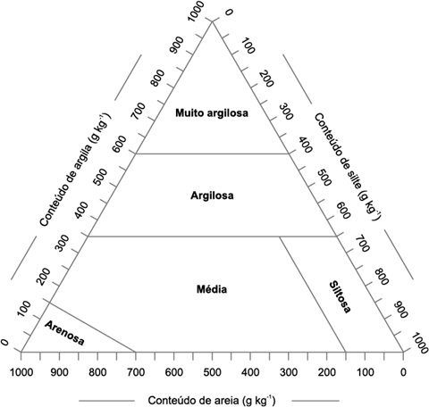
Descrição morfológica de um perfil de solo
Textura:
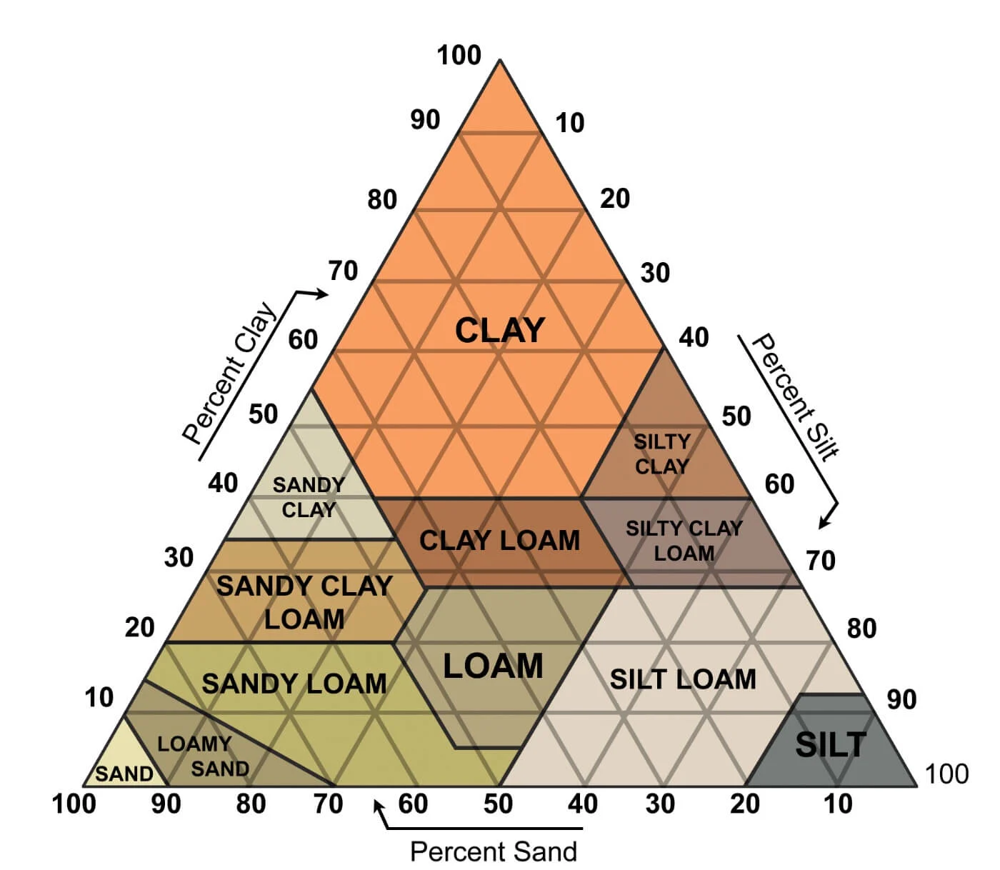
Descrição morfológica de um perfil de solo
Textura:
Avalie primeiro o teor de argila: se a amostra é muito pegajosa, firme e plástica, e é possível formar um cilindro de 4 a 5 cm, classifique como muito argilosa.
Se o solo é parecido com argila, porém se sente ligeiramente pegajoso e é mais fácil de amassar, classifique como franco-argiloso.
Se o solo parece suave, uniforme e fácil de espremer (muito diferente de uma argila), classifique como franca.
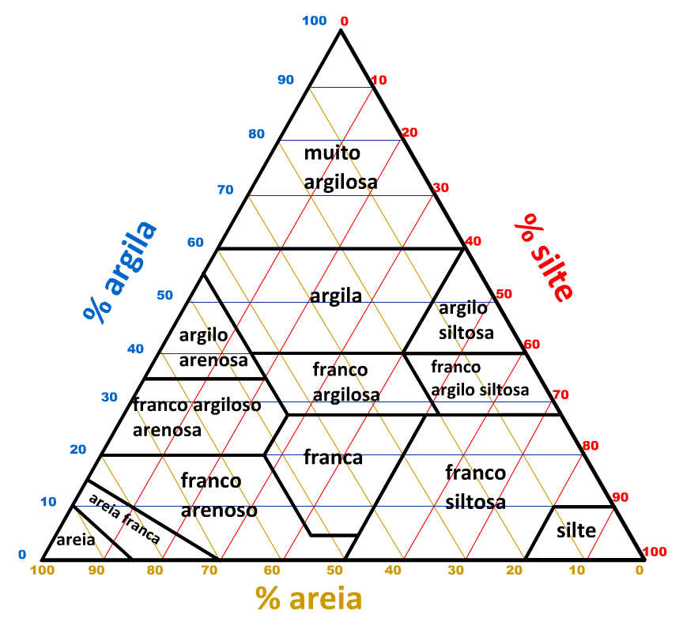
Descrição morfológica de um perfil de solo
Textura:
A seguir, analise a quantidade de areia.
Se o solo é áspero, adicione a palavra arenoso à sua classificação original.
Se o solo parece mais suave, sem a aspereza da areia, adicione a palavra silte ou siltoso à sua classificação.
Se não houver muita aspereza nem suavidade, mesmo que se perceba areia na amostra, mantenha o nome original.
Descrição morfológica de um perfil de solo
Estrutura:
A estrutura é a agregação das partículas primárias do solo em unidades estruturais compostas, separadas entre si por superfícies de fraqueza.
- É avaliada quanto a:
- tipo (laminar, prismática, blocos angulares, blocos subangulares e granular);
- classe (muito pequena, pequena, média, grande, muito grande);
- grau de estrutura (sem estrutura: grãos simples; sem estrutura: maciça; com estrutura fraca, moderada ou forte).
Descrição morfológica de um perfil de solo
Estrutura:
Quanto ao tipo
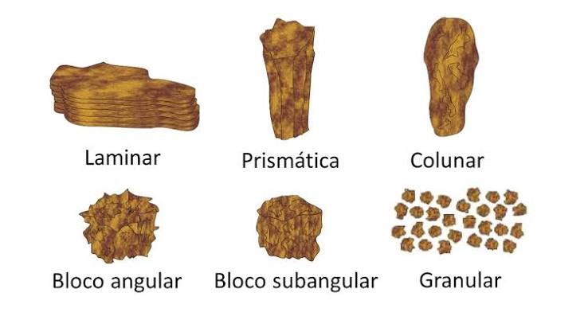
Descrição morfológica de um perfil de solo
Porosidade:
Refere-se ao volume do solo ocupado por água e/ou ar.
Avaliada in situ e descrita quanto ao tamanho e à quantidade dos poros.
Quanto ao tamanho:
- Sem poros visíveis: quando não apresentar poros visíveis, mesmo com lupa de aumento de 10x;
- Muito pequenos: poros inferiores a 1 mm de diâmetro;
- Pequenos: maior ou igual a 1 mm e menor que 2 mm de diâmetro;
- Médios: maior ou igual a 2 mm e menor que 5 mm de diâmetro;
- Grandes: maior ou igual a 5 mm e menor que 10 mm de diâmetro;
- Muito grandes: igual ou superior a 10 mm de diâmetro.
Descrição morfológica de um perfil de solo
Porosidade:
Quanto à quantidade:
- Poucos poros: 1 por unidade de área;
- Poros comuns: maior que 1 e menor ou igual a 5 por unidade de área;
- Muitos poros: maior que 5 por unidade de área.
Descrição morfológica de um perfil de solo
Cerosidade:
Aspecto “brilhante” ou “lustro” observado pelo revestimento dos agregados por material inorgânico (geralmente argila).
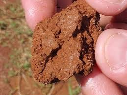
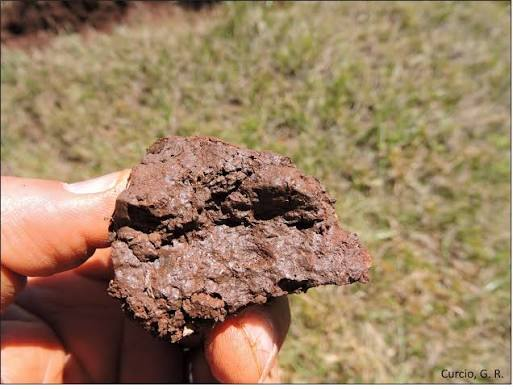
Descrição morfológica de um perfil de solo
Cerosidade:
Avaliada quanto à quantidade e ao grau de desenvolvimento.
Quantidade:
- Pouco;
- Comum;
- Abundante.
Grau de desenvolvimento:
- Fraca;
- Moderada;
- Forte.
Descrição morfológica de um perfil de solo
Superfícies de compressão e de fricção:
São superfícies alisadas, virtualmente sem estriamento.
- Oriundas da compressão na massa do solo ou do material de origem (expansão e contração).
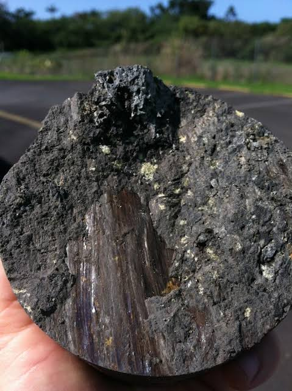
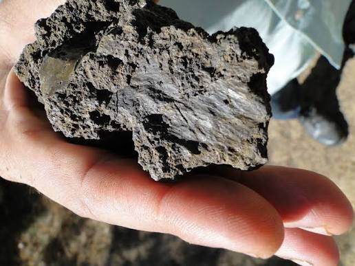
Descrição morfológica de um perfil de solo
Consistência:
Designa as manifestações das forças físicas de coesão entre partículas do solo e de adesão entre partículas do solo com outros materiais.
Descrita em três estados de umidade padronizados: seco, úmido e molhado.
Descrição morfológica de um perfil de solo
Consistência:
Seco:
- Solta: não coerente entre o polegar e o indicador;
- Macia: a massa do solo é fracamente coerente e frágil; quebra-se em material pulverizado ou grãos individuais sob pressão muito leve;
- Ligeiramente dura: fracamente resistente à pressão; facilmente quebrável entre o polegar e o indicador;
- Dura: moderadamente resistente à pressão; pode ser quebrada nas mãos sem dificuldade, mas é dificilmente quebrada entre o indicador e o polegar;
- Muito dura: muito resistente à pressão; somente com dificuldade pode ser quebrada nas mãos; não quebrável entre o indicador e o polegar;
- Extremamente dura: extremamente resistente à pressão; não pode ser quebrada com as mãos.
Descrição morfológica de um perfil de solo
Consistência:
Úmido:
- Solta: não coerente;
- Muito friável: o material do solo esboroa-se com pressão muito leve, mas agrega-se por compressão posterior;
- Friável: o material do solo esboroa-se facilmente sob pressão fraca e moderada entre o polegar e o indicador e agrega-se por compressão posterior;
- Firme: o material do solo esboroa-se sob pressão moderada entre o indicador e o polegar, mas apresenta resistência distintamente perceptível;
- Muito firme: o material do solo esboroa-se sob forte pressão; dificilmente esmagável entre o indicador e o polegar;
- Extremamente firme: o material do solo somente se esboroa sob pressão muito forte, não pode ser esmagado entre o indicador e o polegar e deve ser fragmentado pedaço por pedaço.
Descrição morfológica de um perfil de solo
Consistência:
Molhado: Plasticidade
- Não plástica: não se forma um cilindro ao rolar a amostra entre as mãos;
- Ligeiramente plástica: forma-se um cilindro, que se quebra facilmente ao ser curvado para formar o círculo, e é facilmente deformado;
- Plástica: forma-se um cilindro, que se quebra em mais de uma seção ao ser curvado para formar o círculo, sendo necessária pressão moderada para deformação;
- Muito plástica: forma-se um cilindro, que não se quebra ao ser curvado para formar o círculo, sendo necessária pressão moderada a forte para deformá-lo.
Descrição morfológica de um perfil de solo
Consistência:
Molhado: Plasticidade
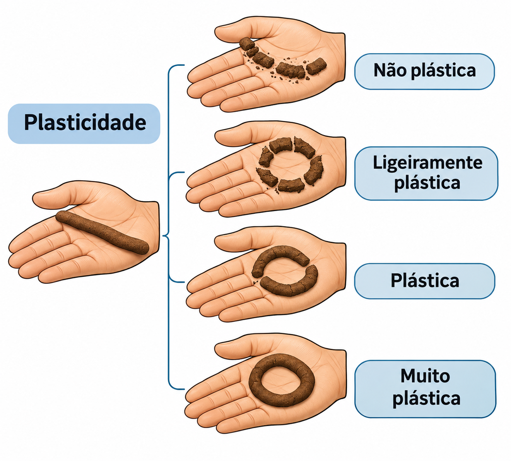
Descrição morfológica de um perfil de solo
Consistência:
Molhado: Pegajosidade
- Não pegajosa: após cessar a pressão, não se verifica, praticamente, nenhuma aderência da massa ao polegar e ao indicador;
- Ligeiramente pegajosa: após cessar a pressão, o material adere a ambos os dedos, mas desprende-se de um deles perfeitamente; não há esticamento ou alongamento quando os dedos são afastados;
- Pegajosa: após cessar a compressão, o material adere a ambos os dedos e, quando estes são afastados, tende a alongar-se um pouco e romper-se, em vez de desprender-se de qualquer um dos dedos;
- Muito pegajosa: após a compressão, o material adere fortemente a ambos os dedos e alonga-se perceptivelmente quando eles são afastados.
Descrição morfológica de um perfil de solo
Consistência:
Molhado: Pegajosidade
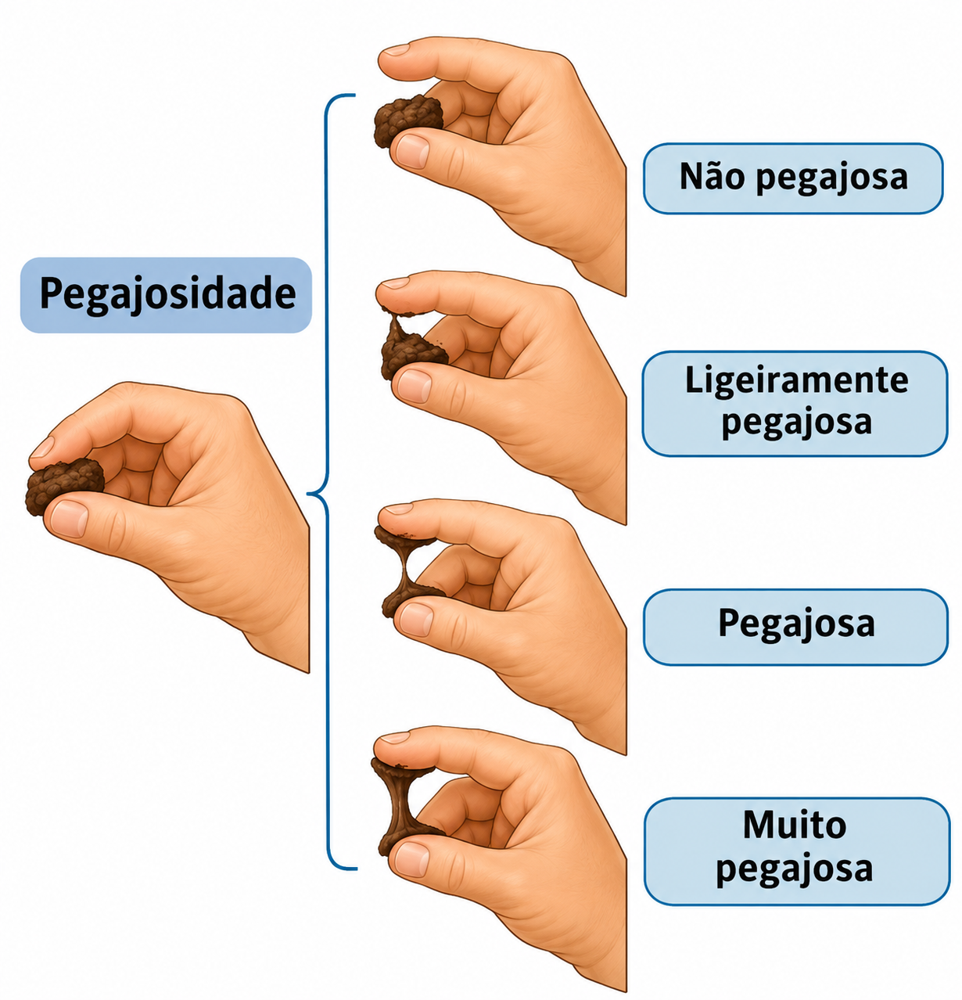
Descrição morfológica de um perfil de solo
Cimentação:
Diz respeito à consistência quebradiça e dura do material do solo, determinada por qualquer agente cimentante, exceto argilominerais, e que pode ser: carbonato de cálcio, sílica, manganês, óxidos de ferro e/ou alumínio.
Não se altera com o umedecimento, persistindo a sua dureza quando molhado.
Descrição morfológica de um perfil de solo
Cimentação:
Classificação:
- Fracamente cimentado: a massa cimentada é quebradiça, tenaz ou dura, mas pode ser quebrada nas mãos;
- Fortemente cimentado: a massa cimentada é quebradiça e mais dura para ser quebrada nas mãos, porém pode ser quebrada facilmente com o martelo pedológico;
- Extremamente cimentado: a massa cimentada é quebradiça, não enfraquece sob prolongado umedecimento e é tão dura que, para quebrá-la, é necessário um forte golpe com o martelo pedológico.
Descrição morfológica de um perfil de solo
Nódulos e concreções minerais:
Corpos cimentados que podem ser removidos intactos da matriz do solo.
Avaliados quanto à quantidade, ao tamanho, à dureza, à cor e à natureza dos nódulos e concreções.
Descrição morfológica de um perfil de solo
Nódulos e concreções minerais:
Quantidade:
- Muito pouco: menos de 5% do volume;
- Pouco: maior ou igual a 5% e menor que 15% do volume;
- Frequente: maior ou igual a 15% e menor que 40% do volume;
- Muito frequente: maior ou igual a 40% e menor que 80% do volume;
- Dominante: maior ou igual a 80% do volume.
Descrição morfológica de um perfil de solo
Nódulos e concreções minerais:
Tamanho:
- Pequeno: menor que 1 cm de diâmetro (maior dimensão);
- Grande: maior ou igual a 1 cm de diâmetro (maior dimensão).
Dureza:
- Macio: pode ser quebrado entre o polegar e o indicador;
- Duro: não pode ser quebrado entre os dedos.
Forma: esférica, irregular ou angular; Cor: preta, vermelha, branca etc.; e Natureza: tipo (petroplintita ou plintita), nódulos ferromanganesianos, gibbsíticos, carbonáticos etc.
Descrição morfológica de um perfil de solo
Presença de minerais magnéticos: Verificada por ímã de bolso quanto à presença e à quantidade de grãos que são atraídos pelo ímã.
Presença de carbonatos: Verificada pela efervescência do material com HCl 10%, avaliando-se a intensidade da efervescência.
Presença de manganês: Presença de torrões com coloração preta, não orgânicos e que efervescem com H2O2.
Presença de sulfetos: Comum em áreas de drenagem restrita, com águas salinas ou salobras (manguezais, marismas e outros).
Descrição morfológica de um perfil de solo
Eflorescências: Ocorrência de sais cristalinos sob forma de revestimentos, crostas e manchas.
Coesão: Avaliada em condição de solo seco, ao separar os horizontes ou retirar as amostras. Pode ser moderadamente coeso ou fortemente coeso.
Fim!